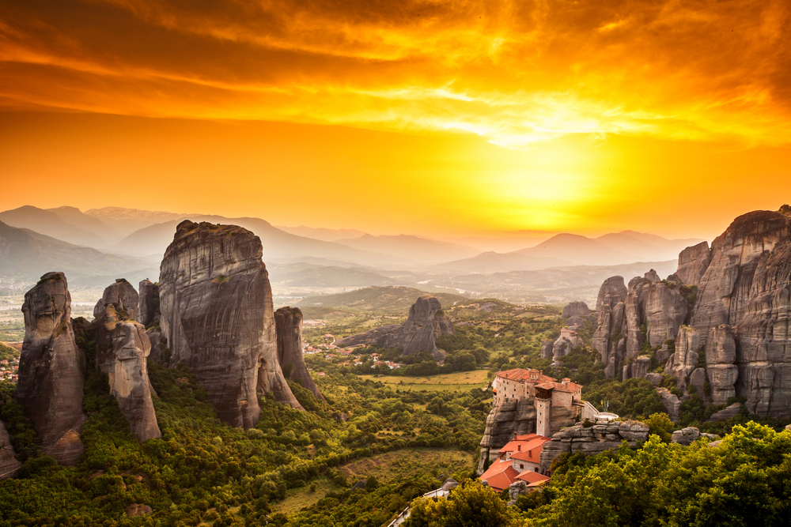
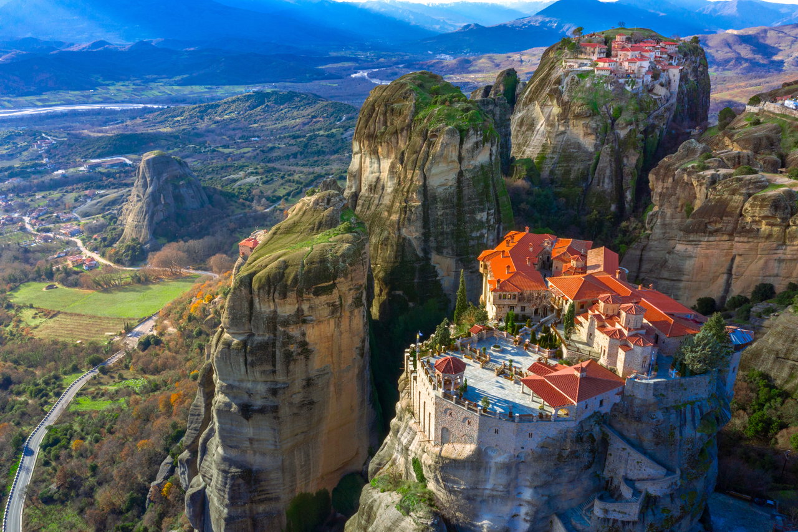

METEORA

Монастыри Метеоры являются одними из самых ярких достопримечательностей Греции. Свое название это место получило от греч. «Метеора» (Μετέωρα), что буквально означает «висящий в воздухе», что прекрасно описывает эти шесть замечательных греческих православных монастырей.
История
Песчаный пик впервые был освоен византийскими отшельниками в 11 веке, которые взбирались на вершину скалы чтобы побыть наедине с Богом. Настоящие монастыри были построены в 14 - 15 веках, во времена нестабильности и возрождения отшельнических идеалов. Величие этого места и его естественная природная безопасность от нашествий грабителей и разбойников позволили создать с течением времени крупную организованную монашескую общину с множеством монастырей, которые росли и укреплялись с помощью многочисленных даров и вкладов. Первые монастыри Великой Метеоры (Μεγάλου Μετεώρου) появились в (1340) году и до (1500) года их число выросло до 24. Они процветали вплоть до 17 века, но только 6 из них сохранились до наших дней.
